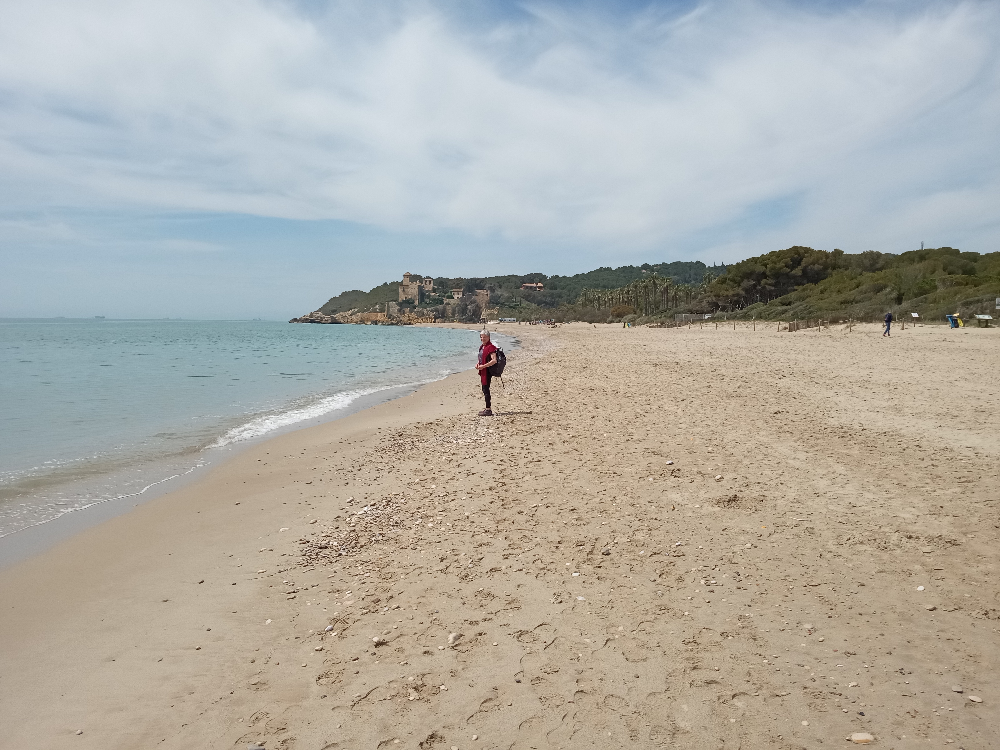
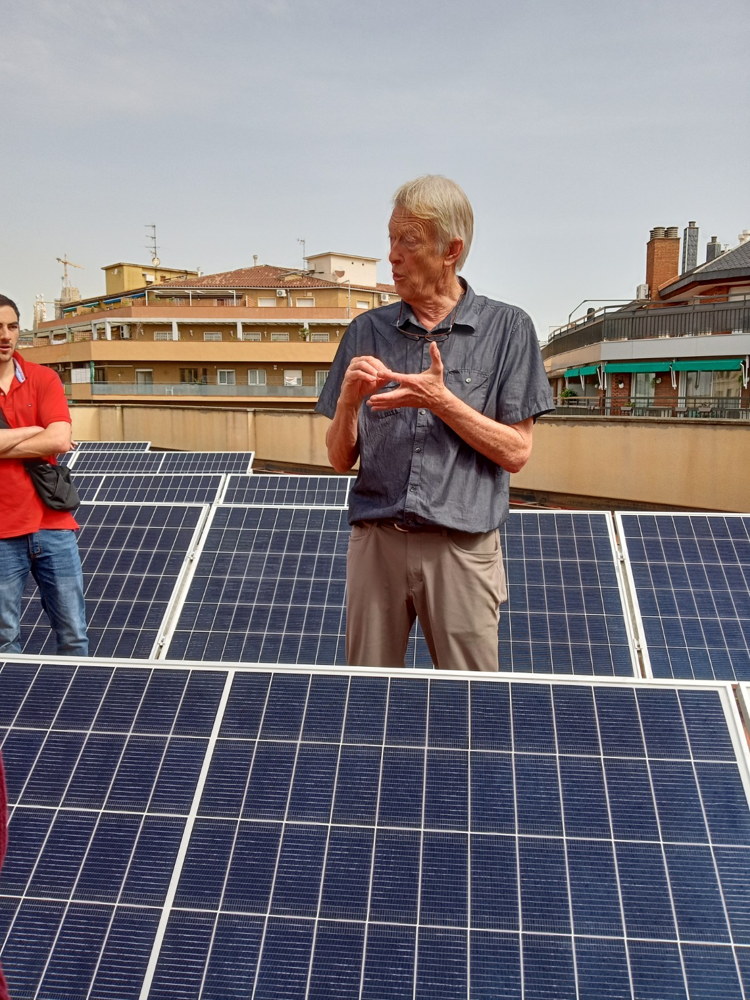
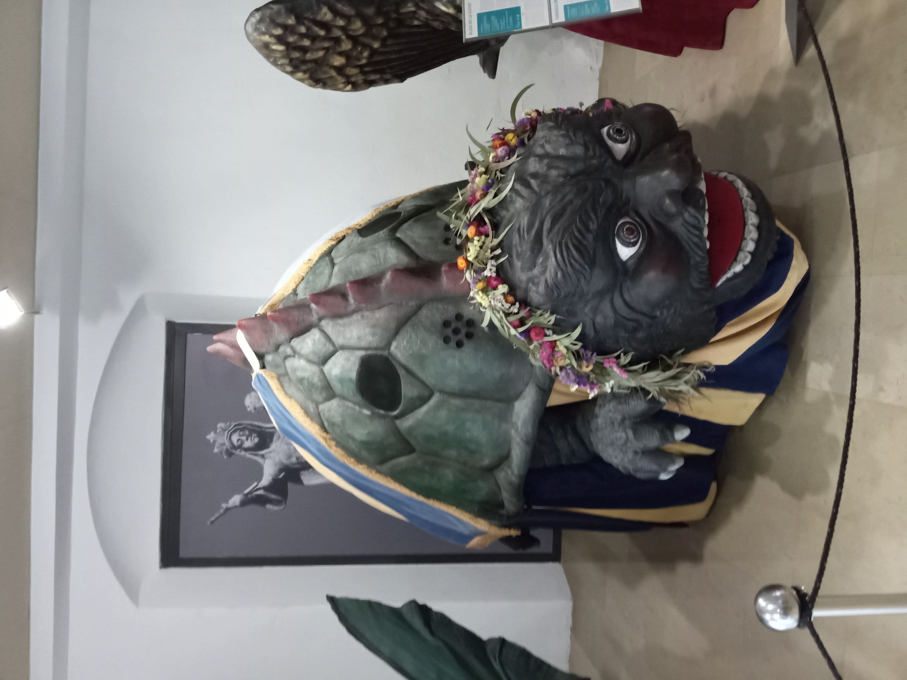
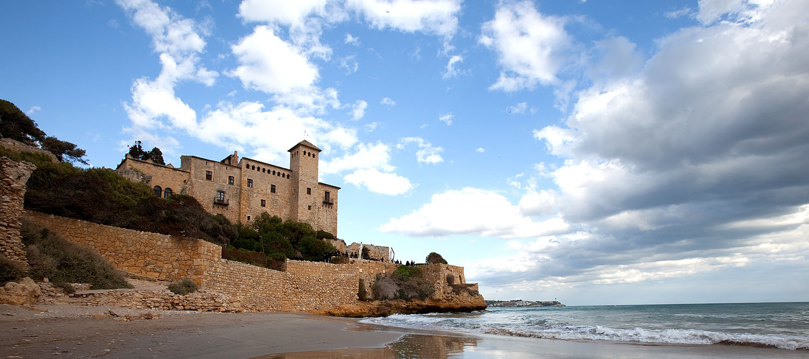

Week 6: 25/4/2022 - 1/5/2022¶
This week we have the full complement of classes along with a humanities tour of el Born and the Ciutadella. This week is also when Bente arrives from BC to visit for 10 days or so.
25/4/2022 Monday¶
Monday after a busy weekend almost seems like a relief when all we have time to do is go to class, teach first and then take Spanish, before heading home to catch up on laundry, homework, and rest. This was a typical Monday in that sense. At this point I’m writing this on Wednesday so it’s actually hard to remember if we did anything else. We often find, on Monday’s and Wednesday’s, that we aren’t walking as much so we have taken to walking home from Spanish class which takes about 45 min. This is almost 4 km which feels very comfortable and enjoyable. Back home I don’t know that I would routinely take the 45 min to walk somewhere but here it feels very natural. Even getting from the SAE classroom to Expanish is a little over 2 km and is what all the students do on class days.
26/4/2022 Tuesday¶
Music class plus Altafulla-Tamarit
After music class where we went through the Song Exploder podcast episode with Hans Zimmer and his compositional process for the movie Dune we headed off to Tarragona. This was our first experience trying to find our way through the massive Barcelona-Sants station. It’s enormous. Finally found the right ticket booth since there are multiple ways to get to Tarragona. There is an Ave (high speed train), a regular Renfe train, and then there are the Rodalies (suburban trains). All of them end up at Tarragona but have different stopping points along the way as well as different schedules. The ticket isn’t for a particular train but just for a particular destination. Because Dawn had mentioned that she had found a reference to a pretty and less visited beach at Tamarit I wanted to be able to get off earlier than Tarragona if needed. Turns out that doing some searching as we traveled that the Altafulla-Tamarit station seemed to be close to the beach that interested her. We got off and wandered downhill (the official towards the water direction) through a largely vacant beach town until we found ourselves on a nearly deserted beach. We could see the castell (11th century) that had intrigued Dawn about half a km down the beach so we headed off to see. It turns out to be quite beautiful and accessible for what we needed.
Beach at Altafulla-Tamarit

Dawn asked a couple on the beach about trails across the headlands and they noted you could go around the other side of the castell to a small cove but the longer trail was closed. After sitting in the cool breeze looking out over the ocean for a while we walked around to the cove and out onto a rock jutting out into the ocean. Very beautiful and secluded. Had the undercut cliffs that Tegan is planning to climb on in Minorca later in the spring. Hope the rock in Minorca is a bit less sharp and chossy.
Rocks at Altafulla-Tamarit

There has a small boy running through the water and sand while his mom watched and a older gentleman contemplating swimming (but didn’t). As we were sitting just warming in the sun a couple of younger women that reminded Dawn of the models at life drawing came down with their dog to sit in the sun and play catch with the dog in the waves. Joyful looking dog. Took me a while (Dawn had to mention it) to notice that they had european body comfort and were topless playing with the dog. One feature of the beaches here is that there are rafts of small to medium sized flat skipping stones. After some time snoozing in the sun I attempted one of my homages to Andrew Goldsworthy. After a few tries I got a small arch to bridge between two points on the edge of the beach. I like this type but I doubt this one will last. It’s a little too unstable. The one like this on a rock below the Writing Dept on the COCC campus is still there after several years which gives me secret joy.
Arch at Altafulla-Tamarit

Somewhere in the scramble down to the cove Dawn rolled her ankle in some way and we were a little concerned about how serious it might or might not be. Decided not to push it too much and walk gently back to the train station and head for home after a beverage.
Managed to find a cafe that was open to have a coffee and a beer before heading back to the train platform to sort out the schedule. We only had to wait about 20 min for a train to stop (none skipped us in the meantime)and we were home to Clot by 6:00 or so. I feel like we have a better sense of how to find the rail lines we want though still not totally secure. Had time to do some shopping to restock before dinner and bed.
27/4/2022 Wednesday¶
Today started with Astronomy which was interupted by our opportunity to tour the solar system on the roof of the building that I had noticed 4 months ago in google satellite view. I couldn’t tell whether it was a hot water system (required by Barcelona ordinance) or a PV system. As it turns out its about a 5 or 10kW PV system that is owned by the landlord. They installed it both to engage with green initiatives (I don’t know what the programs are that might have supported this installation) and to offset some of their energy costs. I think I made some mental math errors as we were talking about them that I will have to correct later. Side note: This is one of the ways that I can feel my mind slipping these days. I make more and more unforced math errors in my head. Very frustrating! Anyway… We had a good discussion and perhaps added some thoughts to those at SAE who are working to construct a sustainability thread for some of their other international business programs.
PV Solar Panels on roof at SAE

Note to Self: I need to connect SAE with the Gaviotas thread from Columbia which might be useful to them.
Another relatively new SAE employee, Katherine (C or K?), stood in for Iria.
After the ‘tour’ we closed class a little early so students had plenty of time to eat and do some studying before their mid term exam at Expanish. We went for comfort food at I Love Italy just off Diagonal. Nellie had the same idea. She and Dawn chatted and studied a little while we ate. This exam is practically the only time I’ve seen everyone be a bit stressed which is not a bad thing. Exam consisted of grammar, writing, listening, reading comprehension, and an oral portion. For my class we had to offer an assessment of two candidates for a job posting as a first part and then role play one of the candidates in a mock interview. Interesting way to see how we used langauge. Somehow I always feel like I’m practically unintelligable and yet my conversational partner seems to respond appropriately.
Dawn was still waiting for the oral portion of her exam so I went off to Origo Bakery to refresh our bread supply and then came back for her. On the way home, walking, we talked a little about language classes and how fluency feels like it can only come from learning like a child through imitation in context which is hard to replicate in a classroom. Oh well…. we do all seem to be getting better which is good.
Dawn has an art show to judge before Friday so we stayed home this evening and she worked on that while I started trying to get caught up on this journal.
28/4/2022 Thursday¶
Today Bente arrived from BC in the late afternoon. We started the day working at home on various tasks from this journal to Dawn’s jurying for an art show. After some discussion we decided to walk to Plaça Catalunya to catch the Airport bus. We would see what happened with the taxi from Bente from the airport and perhaps Bruce would ride the metro back in while Dawn rode with Bente to her apartment. As it turned out the bus was quick and comfortable. Bente’s flight was delayed a bit in Amsterdam but we connected easily and there was plenty of room for all of us in the taxi. Taxi was 37€ which seemed very reasonable. The driver was a nice guy who happens to live relatively near us in Clot. In our conversation I found out that he only manages about 4-5 trips a day from the airport. Apparently there are nearly 700 drivers in the airport fleet and they often wait 2 hrs between rides. He said he read lots of books and watched movies. Hard to imagine how 4-5 rides a day is financially workable.
Aparthotel Silver is a very nice hotel style apartment just a block or so from the Fontana stop on L3. Very convenient. We got Bente settled and then went out for a walk to see if we could get her a SIM for the phone she borrowed from a friend and perhaps some bread for snacks. The Vodaphone shop didn’t have any prepaid SIMs but the Orange shop did so we got her set with 35 GB an 1 month for 20€ – seems very reasonable. Also located some coffee and bread places for her to explore for breakfast tomorrow. Her room looks out over a large interior courtyard and was very nice. We left her around 8:00 and headed home ourselves.
Dawn noticed a banner on a light pole near the Arc de Triomf announcing an Architecture Festival from 5/5/2022 to 15/5/2022. This seemed intriguing and while we had a coffee and lemon cake at a small place, La Mal’criada (which turned out to be very nice just a block or so from Plaça Urquinoana) we looked the event up. It seemed fascinating and many of the events are free. I will put the main link to the event here and then add this to the interests page in more detail.
The event is Model. Barcelona Architecture Festival.
Model. Barcelona Architectures Festival is a space for reflection and celebration that brings us experimental architecture and helps us to rethink how we wish to live together through new city models and imaginaries.
Launched by Barcelona City Council and the Catalan Architects’ Association (COAC), the festival aims to transform the urban space into a platform for architectural talent and up-and-coming design, the city into a meeting forum for leading thinkers from around the world and, more significantly, architecture into a space for exploration and inspiration for all citizens.
29/4/2022 Friday¶
We figured today we would do a little exploring of BCN with Bente. Get her a T-usual, sort out her phone, have some coffee, and get down to La Rambla. As it turned out we got all of those things in. She was having trouble with the SIM card in her phone but we got that sorted. Stopped to have some coffee and croissants near her place. Got the T-usual card without issue. Rode the L3 down to Drassanes at the bottom of La Ramnla. Walked around Port Vell and back to the bottom of La Rambla. Walked up La Rambla part way and then headed across past the cathedral to find Raima (the paper store) where Dawn and Bente got very interested in the colored silk paper that was there. We’re still thinking about that. The rooftop bar at Raima wasn’t open until 4:30 so we went down to find Pan Club (the quiche restaurant that Anne likes) behind Mercat Santa Caterina. Had a good lunch. Walked back past the life drawing where we ran into Benoit in the alley. Took Bente up to the Palau de la Musica to get a sense of that building. Finally we took the L1 back to Marina and walked to the Parç de l’Estació del Nord where she and Dawn did a little sketching of the ombu trees there. After that we escorted her back to her apartment and then went home. Dawn finished jurying the show she was working on and prepped for Life Drawing tonight since she has missed the last couple due to timing issues. Long day but lovely to spend it with Bente.
An interesting note: Dawn asked what the labyrinthe in the Parç de l’Estació del Nord was constructed of. The large spiral has a lovely color gradient but it wasn’t clear whether it was painted or tiled. The image below shows what I found when I went over. It appears to be tiles that are not flat and square as you would expect. Many, though not all, of the large individual tiles appear to be warped or distorted. It seems possible that they used a large batch of defective tiles to fabricate the sculpture. They are not high fired tiles but on some of them that are broken they do appear to be a low fire ceramic inside. Using flawed tiles from a large batch seems like a possible strategy to keep costs low on a public works project. Hard to say. It doesn’t really distract from the visual ipact of the sculpture though it is quite obvious once you stop to look at it.
Tiles at labyrinthe in Parç de l’Estació del Nord

Similarly, when I went to look at the large earthworks sculptures in the same park they appear pretty rugged up close. From a distance it seems like the tile work is very smooth and precise but up close it also seems a bit casual in terms of construction technique. The base appears to be cement with large tiles casually motared into place. I’ll have to go back and look sometime to see how the edges of the tiles are handled. Perhaps this low fired tile doesn’t have the glass like sharp edges that high fired tiles would have. Now I’m curious.
Dawn also tracked down La Casa dels Entremesos which is a cultural museum just off Laietana behind the Burger King in the Plaça de les Beates. Heading towards the Mercat Santa Caterina from the Burger King on the Tibidabo side of the street take the first left which goes a short block to reach the placa. Dawn has signed us up for a dance class tomorrow morning which I think is a Galician (gallegues) dance class but we will see. In either case it will give us some perspective on the Mulassa giants we saw in Girona last weekend. This museum led to another webpage which articulates the many cultural musuems of which La Casa dels Entremesos in just one.
30/4/2022 Saturday¶
Today we picked Bente up and went down to La Casa dels Entremesos (see yesterdays notes). They were bringing in a teacher from Galicia to teach some dance traditions from Galicia (gallegue). The two sisters were wonderful. There was a pretty good group of 13 many of whom had clearly done some folk dancing before. Slightly complex rithyms much like scottish dancing but with a little syncopation. Dawn might have some images that she will send me. All in all an enjoyable 2 hrs. This turned out to be about the limit of what my knees could take but I think I’m ready if we meet a local festival and there is some dancing.
Regarding the Entremesos: They taller ones weigh around 30-40 kg (80+ lbs) and the frame underneat is a trapezoidal wooden frame that has multiple points of contact with the performer inside. There are rails that sit on the shoulders, a contact point on top of the head, and cross members at hand height. All of these contact points distribute the stress of carrying the gegante. The frame extends close to the ground so that it is relatively easy to set it down with stability. The two person frames from horses and dragons appear to be similar but the person in the back must have a lot of coordination and trust with the person in front. The smaller ‘big heads’ mostly ride directly on the performer who is looking out through the mouth. Here are a couple of images for scale and joy. You can also look back to see the Mulassa that we say in Girona last Sunday.
Gegantes at La Casa dels Entrmesos

Turtle at La Casa dels Entrmesos

After the dance workshop we went and had lunch at the bar where I had gone to study during one of Dawn’s drawing classes. It’s between Mercat Santa Caterina and Cathedral Square. After a nice lunch we thought we might kill a little time before heading over to the Magic Fountain since it doesn’t turn on even in ornamental mode until 4:00. Following a suggestion from Nellie we stopped into Primark on the corner opposite Cafe Zurich on Plaça Catalunya. We were just looking for some cooler (lighter) clothes as the weather is getting a little warmed and the prices seemed low and the clothes seemed wearable. We got some t shirts and other stuff. Sizing seems definitely smaller than in the US. Dawn got a overall skirt that was the same size she would wear in the US and it was too small. For me I usually wear an XL in the US (for my shoulders) and when I held it up it seemed too tight. I ended up with XXL and that fits a little snugger than an XL at home. Lines at Primark were quite long which makes sense for a Saturday. If we go back we’ll avoid the weekend.
After shopping we hopped back on the Metro and went up to Plaça Espanya and arrived pretty much as they started the Magic Fountain. We’ll have to go back sometime for the light show at 9:00 pm (21:00).
After spending some time exploring the Magic Fountain from different locations we conintued on up to the Olympic Stadium since most of the escalators were working so Bente’s joints weren’t too stressed. Made it easier for me as well. It was a much quieter day up at the Olympic Stadium then when we were there after the Monster Truck rally. Dawn got some nicer pictures of the ombu tree at the top that had been covered with kids the last time we were here.
Brian Nelsen had suggested that the WC’s at the Olympic Stadium were intriguing but didn’t say how. I wandered up to see but they were closed off today. On the way back down to Dawn at the ombu tree I looked out over Tibidabo to see very dark clouds. A quick check on weather underground suggested they were expecting a real dump in a couple of hours. We opted to head home to avoid getting caught in the rain (which turned out to vaporize within a couple of hours – seems startling that the weather prediction could vary that much in just a couple of hours).
1/5/2022 Sunday¶
Today’s plan with Bente was to get out to Altafulla-Tamarit where Dawn and I had gone on Tuesday. Getting tickets seemed much more straightforward this time but there is no rhyme or reason to which train you’re supposed to get on. The Rodalies planner suggests that R14, R15, and R16 all go to Altafulla but the information person said that the Renfe train at 10:00 would get us there. We got on and then the train proceeded to skip most of the stops on the way towards Tarragona. In the end it stopped at Altafulla-Tamarit but there were no announcements or anything. Perhaps this will makes sense eventually.
The beach at Altafulla was MUCH more crowded today which shouldn’t have been a surprise but it was a remarkable change. Particularly at the Castell de Tamarit end where it seemed like there must be a parking lot close to the beach that we hadn’t noticed. As we walked around the castle to the small beach on the other side it was still very crowded. You could see from the headlands trail that there was a wedding being hosted at the castle today which looked like it would be lovely.
Castel Tamarit

While Dawn and Bente found a place to sketch I followed the large number of people who seemed like the were heading along the headland walk which was supposedly closed. It may be closed but people were just walking past the chains and continuing on the trail. Not at all clear why it’s closed but I explored a ways. There are some nice overlooks where you can look along the rocks but I didn’t get far enough to reach the next cove which is at the easterly end of Tarragona beach. This could be a nice drawing area for Dawn on a weekday when it is less crowded.
Around 2:00 we had a discussion about timing and decided that trying to catch the 3:00 train made more sense than waiting around for the hordes to leave at 5 or 6. This would also allow Dawn to go to Life Drawing and Bente to catch up on emails. When we got up to the train station there were a number of people waiting who said that the 2:40 train was delayed until 3 ish or maybe later. I had a small conversation with a family on bikes who come up this way to camp and stay away from the overcrowded Barcelona beaches on the weekends. They were hoping the train, when it came, would be one of the newer ones with better spaces for their touring bikes with panniers. Unfortunately it wasn’t and I didn’t see how they managed to fit their bikes into one of the other cars.
We got back to Sants around 4:15 and went with Bente on the L3. We got off at Catalunya while she continued on to Fontana where she is based. We discovered this morning that Casa Vincen (Guadi’s residence) is just around the corner from her hotel. This got Dawn thinking and they are going to do the Casa Batllo tour at 9:00 tomorrow while I’m teaching. Dawn and I will meet up somehow for Spanish and we’ll see what happens after that.
Amusingly I just got a text from a group of the students who are up in Tarragona this weekend. They were having such a lovely time that they decided to stay one more night and were letting me know they would miss physics class tomorrow. Request approved!
Big news – Dawn found her own way to Life Drawing tonight. I’ll still go get her for the return trip especially when it ends at 22:00 but this is huge!!